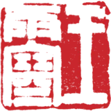

地听
王雨寒

地听 (dì tīng), ‘listening to the ground’.
A handscroll in eight parts. Scroll, drag or use the arrow keys, and touch the water.A scroll in eight parts. Touch the water.
Yuhan Wang
Fibre-optic seismology at ETH Zürich.
The fine line at the water’s edge is a seismogram, and the ridgelines follow it: the M 8.8 Kamchatka earthquake of 29 July 2025, recorded at Sulz, Switzerland. Here, about 12 minutes later, the P wave arrives.At the mark P above, the P wave arrives, about 12 minutes later. Time and swings are not to scale. Data: Swiss Seismological Service
自述About
I am a doctoral student in the Seismology & Wave Physics group at ETH Zürich, supervised by Andreas Fichtner. I work on fibre-optic seismology: distributed acoustic sensing (DAS) turns a telecom cable into a dense seismic array, on the seafloor and under cities. I also build open tools around this work.
- 2025 –Doctoral student, Department of Earth and Planetary Sciences, ETH Zürich
- 2023 – 2025MSc, Earth and Planetary Sciences, ETH Zürich
- 2022A summer with the same group in Zürich: roadside DAS in Athens, ambient-noise tomography, site amplification
- 2019 – 2023BSc in geophysics, minor in mathematics, School of the Gifted Young, University of Science and Technology of China. First DAS work there, with Huajian Yao’s group

海底听震Seafloor
17,325microearthquakes in two months, found with one telecom cable on the seafloor
893in the regional catalogue for the same period
- 五five template events
- 一one cable
- 二two months of data
The Kefalonia Transform Fault, in the Ionian Sea off Greece, breaks in earthquakes above magnitude 6 every 10 to 20 years. Networks on land resolve its small earthquakes poorly.
From 24 April to 22 June 2024, a telecom cable on the seafloor between Kefalonia and Ithaca served as a DAS array. We scanned the two months with a matched filter built from five template events. It found 17,325 microearthquakes, nearly 20 times the regional catalogue. They come in episodic swarms, and one cluster holds over 72 % of the detections. Near the template clusters the magnitude of completeness drops by about 2 units.
The cable runs 15 km, from land under the sea to land, and its fibre has 1872 channels, one every 8.17 m. Each tick on the red line under the water stands for one of them. The small loops are real too: spare fibre stored in coils of 16 to 172 m, found with tap tests, earthquake amplitudes and passing vehicles.
Preprint: Persistent Faulting Activity Along the Kefalonia Transform Fault Revealed by Seafloor DAS, ESS Open Archive, 2026. Presented at the EGU General Assembly 2025. Code: yuhan-mfdas, yuhan_das_spectra and das_wavefront_picker, with a Zenodo archive of the code; the channel map.
著述Papers
-
Yuhan Wang, Adonis Bogris, Christos Simos, Iraklis Simos, Nikolaos S. Melis, Stavros Deligiannidis, Andreas Fichtner
One integrated fibre measurement compared with the DAS channels beside it, on the Kefalonia cable. Code and data.
-
Persistent Faulting Activity Along the Kefalonia Transform Fault Revealed by Seafloor DAS
Yuhan Wang, Men-Andrin Meier, Adonis Bogris, Christos Simos, Iraklis Simos, Nikolaos S. Melis, Andreas Fichtner
-
Yuhan Wang, Andreas Fichtner
How the curvature of a cable filters the wavefield it records, and what that means for laying out a deployment.
-
Shallow Subsurface Imaging for Seismic Hazard using Dark Fibers in Athens, Greece
Daniel C. Bowden, Lu Tian, Yuhan Wang, Krystyna T. Smolinski, Konstantinos Lentas, Nikolaos S. Melis, Adonis Bogris, Christos Simos, et al.
My part began as a summer project in 2022, shown at the AGU Fall Meeting 2022.
-
Yuhan Wang, Andreas Fichtner
-
The full list: Google Scholar, ORCID 0000-0001-6451-1166.
器用Tools
- Wave LabSix experiments in the browser on one finite-difference solver: playground, arrays and DAS, time reversal, tomography, ambient noise, elastic waves.
- SeismoHub LiteA public, read-only daily snapshot: new seismology and wave-physics papers on one searchable page.
- paper-pdf-harvestVerified, licence-aware full-text PDFs for a reading list, from about twenty open channels.
- yuhan-mfdasMatched-filter earthquake detection for the Kefalonia seafloor cable.
雅集Workshop

Tomographic Summer ChillA workshop on multi-scale tomography of the Earth, 30–31 July 2026, at ETH Zürich and online. I co-organised it with Andreas Fichtner, and the Seismology & Wave Physics group hosted it.
行旅Photographs
I photograph night skies, mountains and rivers, and I used to paint, in Chinese ink wash and in oil. More photographs are on 500px, and some videos on Bilibili.
读 Reading Shen Congwen 沈从文, Yu Hua 余华, Su Shi 苏轼, Tao Yuanming 陶渊明; Bertrand Russell, Thoreau, Hermann Hesse, Kafka.
听 Listening Folk and soundtracks: Li Zhi 李志, Yao Shisan 尧十三, Li Jian 李健, Coldplay, Bob Dylan; Ludovico Einaudi, Ennio Morricone, Hans Zimmer, Howard Shore.
落款Contact
“What is essential is invisible to the eyes.”Antoine de Saint-Exupéry, The Little Prince. My old homepage opened with this line.
The landscape is painted in code, new every day; “repaint” makes another. The line at the water’s edge and the ridgelines follow the M 8.8 Kamchatka earthquake of 29 July 2025 as recorded at station CH.SULZ; data: Swiss Seismological Service, SED, at ETH Zürich. The album photographs and the seal are my own.
Zürich, November 2026. Write to me about fibres, faults and earthquakes, or about anything on this scroll.
Seismology & Wave Physics, Institute of Geophysics, ETH Zürich, Sonneggstrasse 5, 8092 Zürich.
丙午年冬
王雨寒写于苏黎世